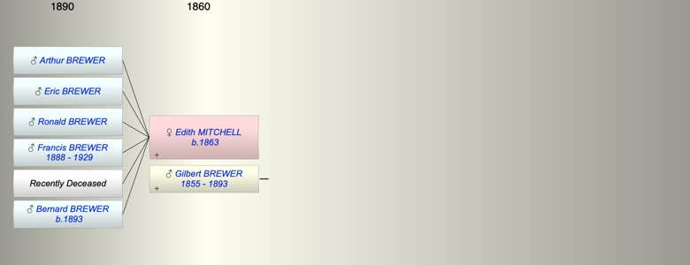

| [Index] |
| Edith Ellen MITCHELL (1863 - ) |
|  |
| b. 1863 at Topsham |
| m. Gilbert Devon BREWER (1855 - 1893) |
| d. Y |
| Near Relatives of Edith Ellen MITCHELL (1863 - ) | ||||||
| Relationship | Person | Born | Birth Place | Died | Death Place | Age |
| Father in Law | Frank BREWER | 22 Nov 1825 | Exminster | 04 Nov 1895 | Kingston On Thames | 69 |
| Mother in Law | Elizabeth HENSOM | |||||
| Self | Edith Ellen MITCHELL | 1863 | Topsham | Y | ||
| Husband | Gilbert Devon BREWER | 08 May 1855 | 03 Jun 1893 | Greenhythe | 38 | |
| Son | Arthur Claude BREWER | |||||
| Son | Eric Mitchell BREWER | |||||
| Son | Ronald M BREWER | |||||
| Son | Francis John Mitchell BREWER | 1888 | 1929 | 41 | ||
| Daughter | Living or Recently Deceased | |||||
| Son | Bernard Devon Mitchell BREWER | 10 Jun 1893 | ||||
| Nephew | Living or Recently Deceased | |||||
| Sister in Law | Annie Hesom BREWER | |||||
| Sister in Law | Julia BREWER | 1849 | Exminster | Y | ||
| Brother in Law | Warwick BREWER | 1853 | 1872 | 19 | ||
| Sister in Law | Eva L BREWER | 1858 | Y | |||
| Events in Edith Ellen MITCHELL (1863 - )'s life | |||||
| Date | Age | Event | Place | Notes | Src |
| 1863 | Edith Ellen MITCHELL was born | Topsham | |||
| 1888 | 25 | Birth of son Francis John Mitchell BREWER | |||
| 03 Jun 1893 | 30 | Death of husband Gilbert Devon BREWER (aged 38) | Greenhythe | ||
| 10 Jun 1893 | 30 | Birth of son Bernard Devon Mitchell BREWER | |||
| 1929 | 66 | Death of son Francis John Mitchell BREWER (aged 41) | |||
| Created on a Mac™ using iFamily for Mac™ on 15 Sep 2023 |